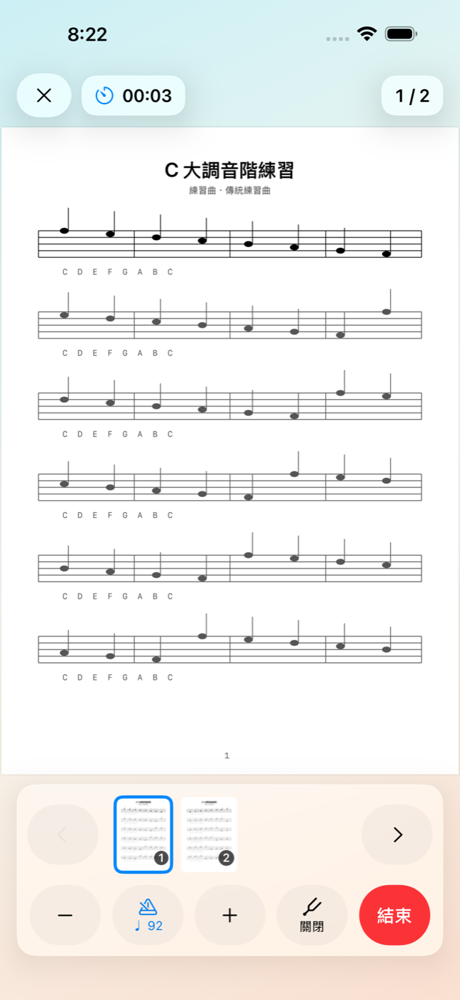
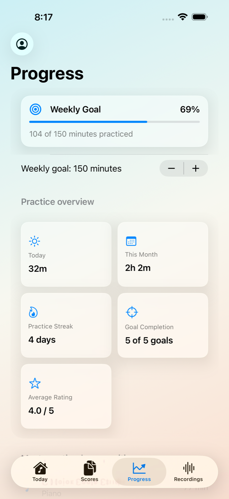

把每次練習，整理成下一個清楚的步驟。
Melody Journal 把目標、樂譜、節拍器、調音器、錄音與反思留在同一個練習工作區，讓今天練了什麼、遇到什麼，以及下次從哪裡開始，都不再只靠記憶。

先決定這次要改善什麼
建立練習時，可以選擇樂器與曲目，標記曲目、技巧、節奏、音準、視奏或表現等練習重點，再補上段落、目標與起始速度。若上一筆紀錄留下了下一步，也可以直接帶回今天的計畫。
設定曲目、重點、段落、目標與 BPM，讓一次練習有明確範圍。
一邊看譜與計時，一邊使用節拍器、調音器和錄音。
記下是否達標、自我評分、心得與下一步，為下次保留脈絡。
常用工具留在練習畫面裡
把紙本、PDF 與照片整理成自己的樂譜庫
樂譜可以由相機掃描、PDF 或照片匯入，也能重新排序、旋轉或移除頁面，再補上標題、樂器與作曲者。練習時可直接打開樂譜，不必另外尋找原始檔案。
在支援 Apple Intelligence 的 iOS 26 裝置上，Smart Import 可使用裝置端 OCR 與 Apple Intelligence，從印刷文字提出標題、樂器、作曲者與頁面順序建議。所有建議都可以先檢查再修改；無法辨識、功能不可用或不想使用時，仍可完全手動整理。
用可行動的資訊回顧進度
進度頁整理今天與本月的練習時間、連續練習天數、每週目標、目標完成率、平均自評、最常練習的曲目與近期紀錄。這些資料不是用來替演奏打分，而是協助自己看見時間花在哪裡、哪些目標常完成，以及下一週要如何調整。
一部裝置最多可以建立五個本機練習檔案，適合不同樂器、不同學習階段，或家中多人分開保存各自的紀錄。
為私人練習設計
Melody Journal 不需要註冊或登入，練習檔案、紀錄、反思、錄音與樂譜都保存在裝置上。相機與麥克風只會在掃描、錄音或調音時依使用者操作取用；App 不含廣告、分析追蹤，也不會透過開發者營運的伺服器蒐集這些內容。
1.4 同時更新整體介面與練習流程，並提供 20 種語言的在地化內容，讓更多學習者可以從自己的語言開始使用。
Melody Journal 1.4 現已在 iPhone 與 iPad 上架。下一次練習，可以從一個具體目標開始，並為下一次留下真正有用的線索。
Turn every practice session into a clearer next step.
Melody Journal keeps goals, sheet music, a metronome, chromatic tuner, recordings, and reflection in one practice workspace, so what happened today—and where to begin next time—does not have to live in memory alone.

Decide what this session should improve
A new session can begin with an instrument and composition, then narrow the work to repertoire, technique, rhythm, intonation, sight-reading, or expression. Add a section, goal, and starting tempo, or bring forward the next step from the previous entry.
Set the piece, focus, section, goal, and BPM to give the session a clear scope.
Keep the score and timer open while using the metronome, tuner, and recorder.
Record the result, self-rating, notes, and next step so the next session has context.
Keep essential tools in the practice workspace
Build a score library from paper, PDFs, and photos
Scan printed music with the camera or import PDFs and photos. Reorder, rotate, or remove pages, then add a title, instrument, and composer. Once linked, the score opens directly inside practice.
On supported iOS 26 devices with Apple Intelligence available, Smart Import can use on-device OCR and Apple Intelligence to suggest printed titles, instruments, composers, and page order. Suggestions remain reviewable and editable. When recognition or the feature is unavailable—or when users simply prefer it—everything can still be organized manually.
Review progress you can act on
The progress view brings together today's and this month's practice time, streaks, a weekly target, goal completion, average self-ratings, most-practiced compositions, and recent sessions. These are not automated judgments of a performance; they help musicians see where time went, which goals tend to be completed, and what to adjust next week.
Up to five local practice profiles can be created on one device for different instruments, learning stages, or family members who want to keep their histories separate.
Designed for private practice
Melody Journal requires no registration or sign-in. Profiles, entries, reflections, recordings, and scores stay on the device. Camera and microphone access is requested only when users scan, record, or tune. The app contains no advertising or analytics tracking, and this content is not collected through developer-operated servers.
Version 1.4 also refreshes the interface and practice flow and includes localized content across 20 languages, helping more learners begin in a language that feels familiar.
Melody Journal 1.4 is now available for iPhone and iPad. Begin the next practice session with a concrete goal and leave a useful trail for the one after it.